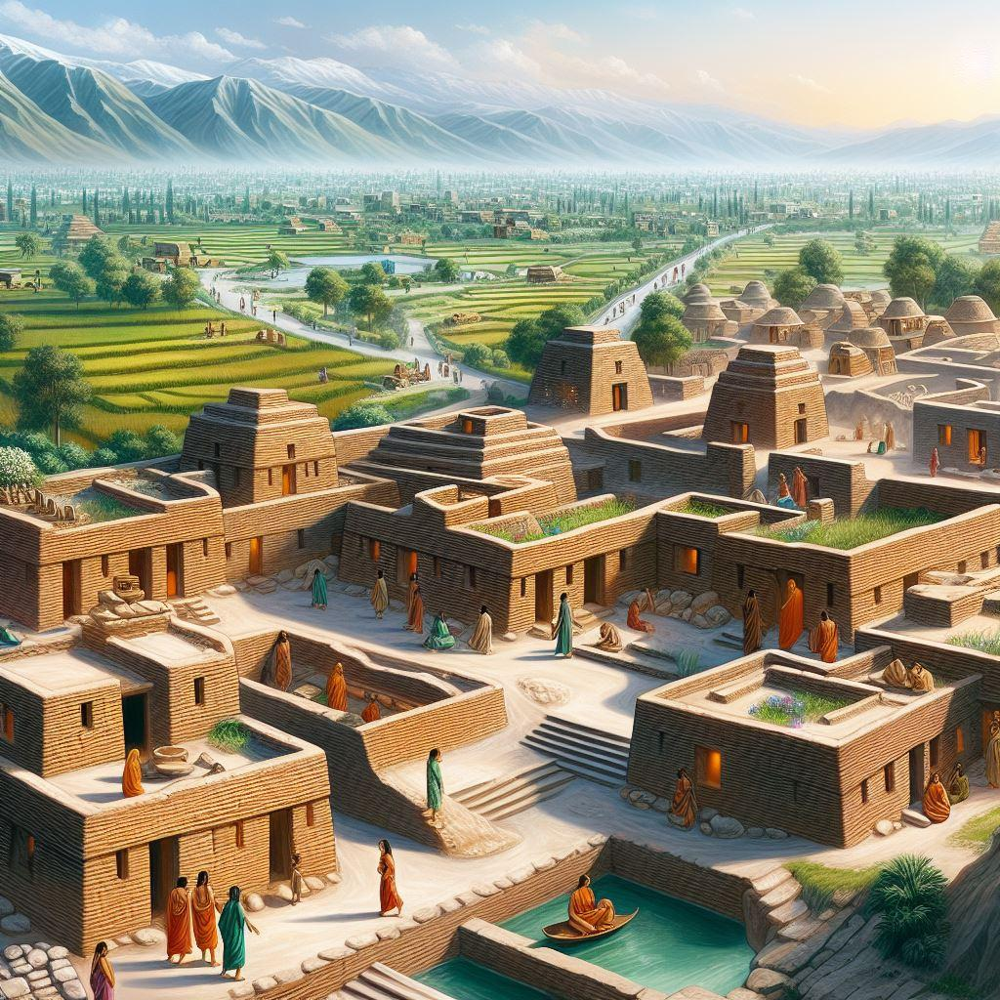
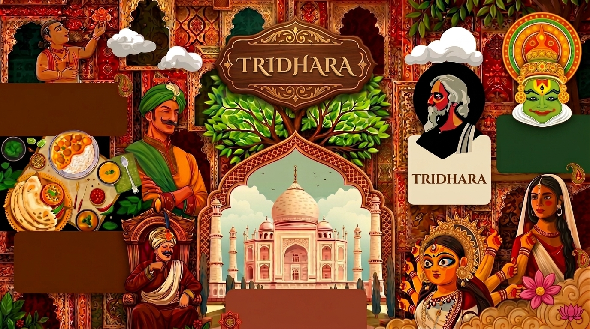
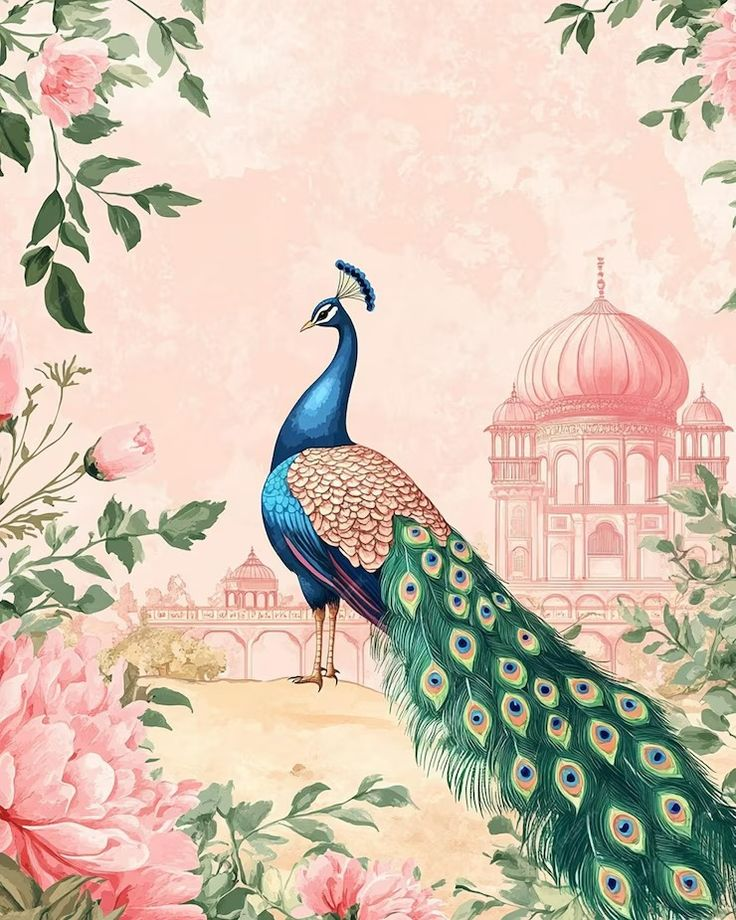
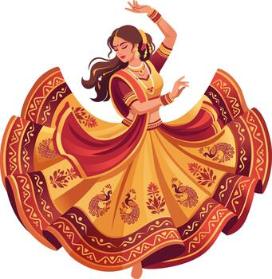

Civilization

Indian civilization grew through planned cities, agriculture, trade, craft, architecture and rich systems of community life.
Discover
TRIDHARA
CULTURE • HISTORY • CIVILIZATIONYou have been chosen.
Three ancient scrolls of Knowledge, Fortune & Wisdom lie hidden within the tapestry of Itihasa.
Seek them well. Unfurl their secrets. Let the discovery begin.

India’s cuisine is a rich blend of regional ingredients, spices, and cooking traditions. From biryani and Indian cuisine to sweets like gulab jamun, every region offers unique flavours and dishes.
Poetry, stories and ideas that shaped Indian literary expression across generations.
India is home to people from many communities, languages, and cultures. Despite this diversity, shared traditions, festivals, and values create a strong sense of unity.
India has a diverse heritage of classical dances, folk music, theatre, festivals, and traditional art forms. Bharatanatyam, Kathak, and folk dances like Garba showcase this cultural richness.
India is known for iconic landmarks, symbols, and personalities such as the Taj Mahal, the Lotus Temple, the national flag, and great leaders who shaped the country’s history.


